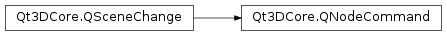

Qt3DCore.QNodeCommand¶
Note
This class was introduced in Qt 5.10.
Synopsis¶
Detailed Description¶
The
QNodeCommandclass is the base class for allCommandRequestedQSceneChangeeventsThe
QNodeCommandclass is the base class for allQSceneChangeevents that have the changeType()CommandRequested.You can subclass this to create your own node update types for communication between your
QNodeandQBackendNodesubclasses when writing your own aspects.
-
class
PySide2.Qt3DCore.Qt3DCore.QNodeCommand(id)¶ Parameters: id – PySide2.Qt3DCore.Qt3DCore::QNodeIdConstructs a new
QNodeCommandwithid.
-
PySide2.Qt3DCore.Qt3DCore.QNodeCommand.commandId()¶ Return type: long Returns .
-
PySide2.Qt3DCore.Qt3DCore.QNodeCommand.data()¶ Return type: object Returns data.
See also
PySide2.Qt3DCore.Qt3DCore::QNodeCommand.setData()
-
PySide2.Qt3DCore.Qt3DCore.QNodeCommand.inReplyTo()¶ Return type: long
-
PySide2.Qt3DCore.Qt3DCore.QNodeCommand.name()¶ Return type: unicode Returns name.
See also
PySide2.Qt3DCore.Qt3DCore::QNodeCommand.setName()
-
PySide2.Qt3DCore.Qt3DCore.QNodeCommand.setData(data)¶ Parameters: data – object See also
PySide2.Qt3DCore.Qt3DCore::QNodeCommand.data()
-
PySide2.Qt3DCore.Qt3DCore.QNodeCommand.setName(name)¶ Parameters: name – unicode See also
PySide2.Qt3DCore.Qt3DCore::QNodeCommand.name()
-
PySide2.Qt3DCore.Qt3DCore.QNodeCommand.setReplyToCommandId(id)¶ Parameters: id – long
© 2018 The Qt Company Ltd. Documentation contributions included herein are the copyrights of their respective owners. The documentation provided herein is licensed under the terms of the GNU Free Documentation License version 1.3 as published by the Free Software Foundation. Qt and respective logos are trademarks of The Qt Company Ltd. in Finland and/or other countries worldwide. All other trademarks are property of their respective owners.